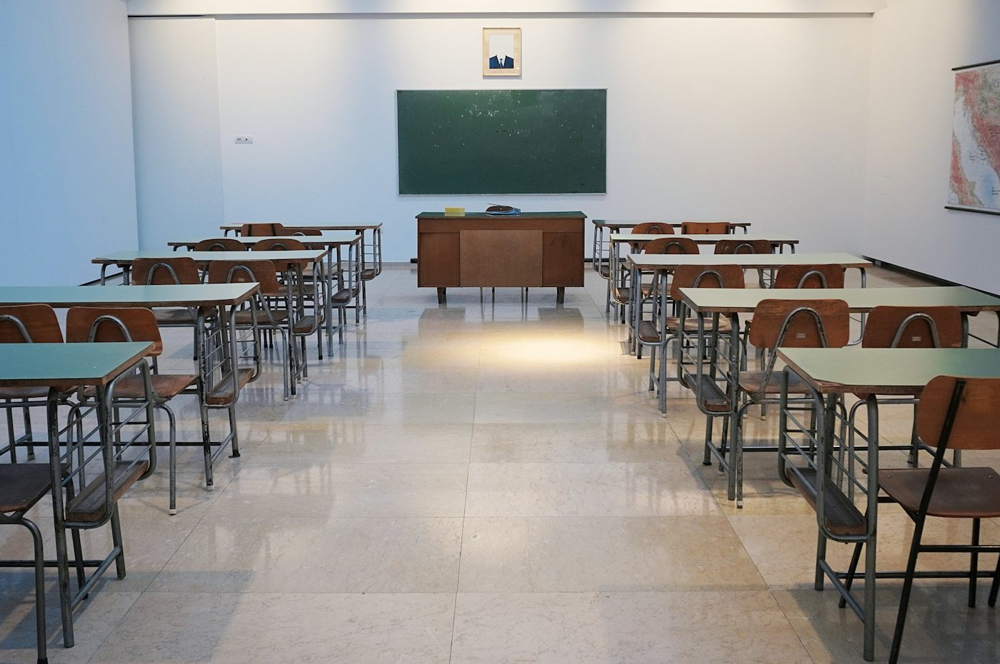

Escola regular
- R$ 1.480Educação infantilMeio período
- R$ 1.890Fundamental I1º ao 5º ano
- R$ 2.240Fundamental II6º ao 9º ano
- R$ 2.690Ensino médioCom simulados e plantão
Autorização SEDUC nº 1.482/2006 · Vila Mariana, São Paulo
No último ano, 84% dos nossos alunos foram aprovados em universidades públicas ou com bolsa.
Da educação infantil à preparação para o vestibular.
| Serviço | O que está incluído |
|---|---|
| Educação infantil | De 2 a 5 anos, com projetos, brincadeira dirigida e adaptação acompanhada. |
| Ensino fundamental | Do 1º ao 9º ano, com inglês diário e iniciação científica. |
| Ensino médio | Itinerários formativos, simulados mensais e orientação profissional. |
| Período integral | Almoço, lição de casa acompanhada, esportes e oficinas. |
| Idiomas | Inglês e espanhol em turmas por nível, com certificação internacional. |
| Reforço e plantão | Aulas de apoio em português, matemática e redação. |
Doze parcelas anuais. Irmãos têm 10% de desconto.
Mais procurado
Aprender exige tempo, repetição e alguém que perceba onde você travou


“Meu filho chegou no sexto ano dizendo que era ruim em matemática. No nono, deu aula de reforço para os colegas. A diferença foi um professor que percebeu onde ele tinha parado.”